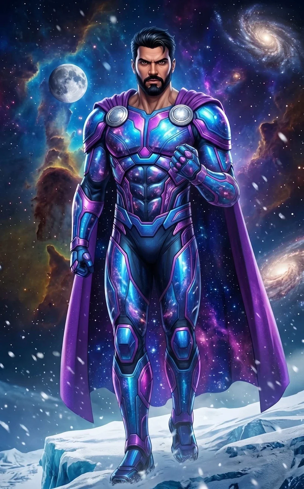
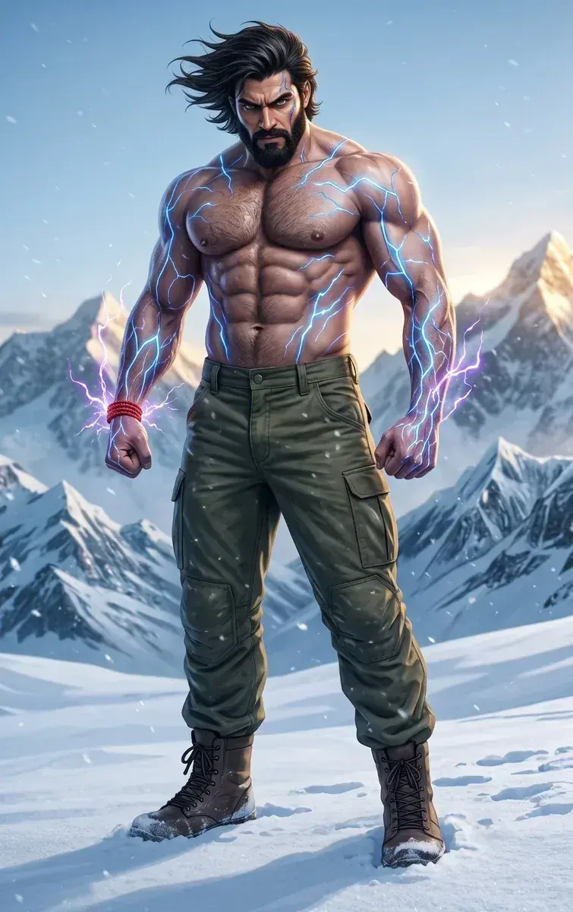
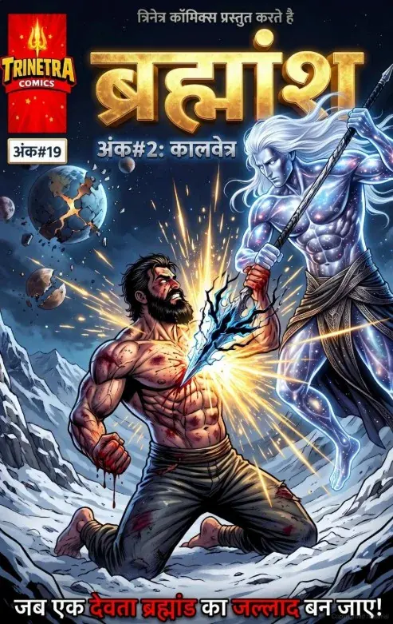
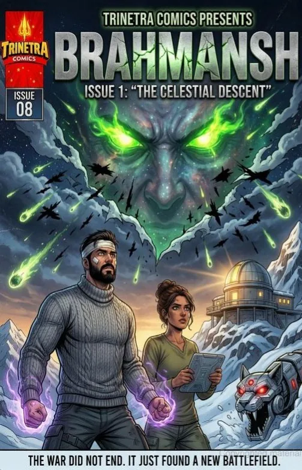

Akashic Energy Manipulation
Projects devastating pulsar blasts of pure concussive kinetic force with zero heat or thermal burn.

THE FIRST SHIELD / GUARDIAN ONE / PRISONER-001
THE FIRST SHIELD
An amnesiac, ancient cosmic god who crash-landed in the Himalayas. Guided by human astrophysicist Dr. Tara, he must relearn his purpose and defend Earth from the apocalyptic galactic threats that have come to hunt him down.
Projects devastating pulsar blasts of pure concussive kinetic force with zero heat or thermal burn.
His skin absorbs immense kinetic friction; heavy-caliber bullets instantly disintegrate into dust upon contact.
Capable of bending spatial coordinates for supersonic atmospheric and interstellar travel.
Rapidly heals from catastrophic damage when exposed to direct stellar radiation.
Operates on ancient, deeply ingrained cosmic war protocols. His muscle memory makes him a perfectly efficient, non-lethal tactical fighter.
An innate, intuitive understanding of cosmic mechanics and astrophysics, even if he lacks the vocabulary to explain it.
Not a physical suit he puts on, but a biomechanical shell summoned from the Akashic fold. Forged from the core of a neutron star and pure dark matter, woven with Akashic circuitry.
His cells act as solar batteries tuned to distant stars. Without ambient cosmic radiation (e.g., during thick, heavy blizzards or atmospheric storms that block the sky), his armor starves and shatters. He loses all powers, becoming entirely mortal, vulnerable, and susceptible to extreme conditions like hypothermia.
His shattered memories leave him vulnerable to psychological shock and manipulation regarding his past.
Stoic, noble, and deeply sorrowful, yet inherently gentle. He operates with clinical efficiency in battle but holds a profound, almost tragic reverence for all life. He is disoriented by human fragility and emotion, yet fiercely protective of it. He speaks with a formal, ancient cadence.
A solidly built, hyper-muscular, handsome North Indian man. He has a powerful, majestic presence with thick, dark hair. His deep brown eyes shift into swirling, vibrant galaxies of luminescent purple, pink, and blinding white stars when his cosmic powers surge.

THE MAN BEHIND THE MYTH
After the comet impacted a remote Himalayan glacier and wiped his memories, Brahmansh was discovered by Dr. Tara, a brilliant and glamorous astrophysicist, who anchored him to humanity and gave him the name Dev.
Heavy, rugged Himalayan winter gear. Thick, oversized grey Pahari knit sweaters, dark cargo pants, and hiking boots. He wears a bright red-thread and bead bracelet on his wrist—a gift from a village girl that anchors him to his humanity.
The base is deep, luminescent stellar blue and light-absorbing dark-matter black. Sleek armor plating aggressively locks over his anatomy, glowing with vibrant nebula-purple and electric-magenta circuitry.
Attached to his broad shoulders by massive silver crescent medallions is a cape that flows like liquid cosmos—the inside of the cape is a literal window into a moving starfield.
SHORT BIO
An amnesiac, ancient cosmic god who crash-landed in the Himalayas. Guided by human astrophysicist Dr. Tara, he must relearn his purpose and defend Earth from the apocalyptic galactic threats that have come to hunt him down.
DETAILED BIO
Eons ago, Brahmansh was “Guardian One,” the ultimate shield of the Trinetra order. Following the devastating Great Cosmic War, he was designated Prisoner-001, encased in a dark-matter comet, and cast into the void. The comet impacted a remote Himalayan glacier, wiping his memories. He was discovered by Dr. Tara, a brilliant and glamorous astrophysicist, who anchored him to humanity and gave him the name Dev.
While his body boasts invulnerability and the power to manipulate concussive Akashic energy, his godhood is tethered to the stars; without their light, he is as fragile as any human. Now, as the Trinetra Protocol awakens and ancient horrors like the Void-Walkers and Kaalvetra (The Star Hunter) descend upon Earth to finish what the Cosmic War started, Brahmansh must embrace his destiny as the universe’s ultimate shield before his new home is reduced to ash.
Maximum 3 latest issues

हिमालय की गहराइयों में गूँजेगा महायुद्ध का शंखनाद!

A Fallen God. A Deadly Blizzard. The Universe's Greatest War Has Reached Earth.
THE TRINETRA UNIVERSE
His past is lost. His destiny is not.